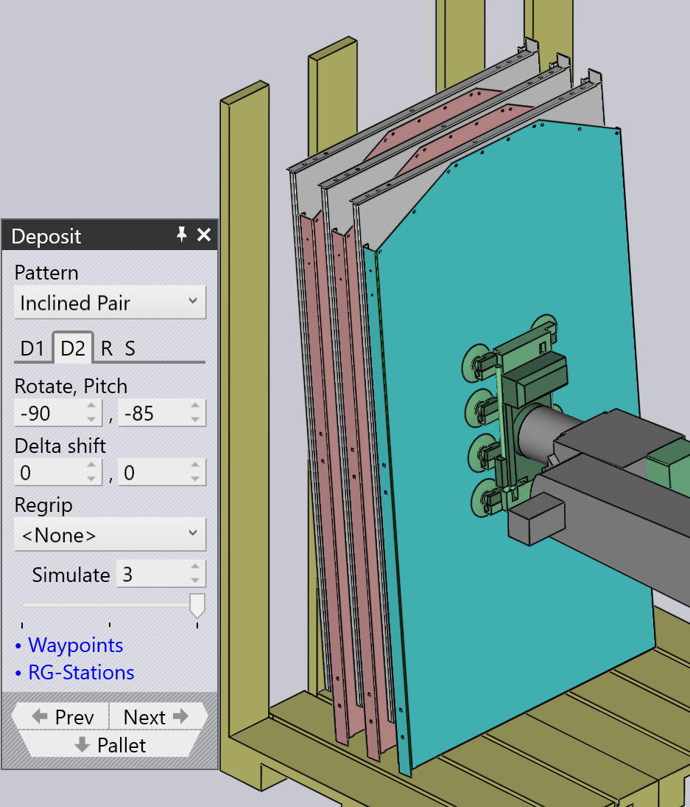

적재 패턴 유형
Simple Grid
Simple Grid 패턴은 가장 일반적으로 사용되며, 팔레트에 직사각형 그리드로 파트를 쌓기만 합니다.
Simple Grid 위치를 사용할 때 기본적으로 하나의 적재 위치 D1만 사용할 수 있습니다.

Weave
Weave 패턴은 길고 얘은 파트에 유용합니다. D2 레이어의 파트는 올 그림과 같이 D1 레이어의 파트에서 90° 배치됩니다.


-
Weave 설정은 weave의 각 레이어에 나란히 쌓인 파트의 수를 제어합니다.
-
Gap은 weave 내에서 이러한 각 파트 사이의 간격입니다
-
Repeat 탭의 Grid 설정을 사용하여 팔레트에서 전체 weave 스택을 여러 번 반복할 수 있습니다. 이 예에서 weave 스택은 두 번 (2개 열, 1개 행) 반복됩니다.
-
Repeat 탭의 Gap (Z,X) 설정은 weave가 반복될 때 사용되며 weave 레이어 사이의 피치를 지정합니다.
Alternating
Alternating 패턴은 가장 유연합니다. 이 패턴에서는 모든 교대 레이어의 방향, 뒤집기 및 상대 이동을 제어할 수 있습니다.
Alternate 패턴은 파트를 더 안정적이고 콤팩트하게 쌓을 수 있습니다.
Alternating 패턴을 사용할 때 기본적으로 적재 위치 D1 및 D2와 Regrip R1을 사용할 수 있습니다.
| D1, D2에서 Delta shift 값을 조정하고 *Regrip*을 추가하여 파트를 서로 잠글니다. |

Alternating Batch
Alternating Batch 패턴은 alternating 패턴과 유사하지만, 구성 요소를 Batch로 쌓고 레이어를 교대할 수 있습니다.
*Batch shift*는 Batch 내에서 Z 및 X 축으로 파트를 이동하는 데 사용됩니다.
*Batch count*는 적재 D1당 Batch당 구성 요소 수를 정의하는 데 사용되며, 1에서 50까지 범위를 가질 수 있습니다. 아래 예에서는 5로 설정되어 있습니다.
*Delta shift*는 Batch로 구성된 전체 적재 D1을 Z 및 X 축으로 이동하는 데 사용됩니다.


Repeat grid ® 탭의 layers 옵션을 사용하여 적재당 Batch 수를 정의합니다. 아래 예에서는 2로 설정되어 있습니다.

Drop to Basket
이 패턴은 기계식 그리퍼를 사용하여 작은 파트를 수집 바스켓에 떨어뜨리는 데 사용됩니다.

Conveyor
Conveyor 패턴은 파트 컨베이어에 파트를 적재하는 데 사용됩니다. 이 옵션은 긴 얘은 파트를 컨베이어에 적재할 때 필수적입니다.
| 중간 크기의 파트에 기계식 jaw 그리퍼를 사용할 때 conveyor 패턴을 제외한 모든 다른 패턴 유형은 선택할 수 없습니다. |

Inclined
Inclined 패턴은 벽(또는 측베이 있는 팔레트)에 파트를 수직으로 쌓는 데 사용됩니다.
| 이 패턴은 항상 사용할 수 있는 것은 아닙니다. 이것이 가능하려면 파트가 충분히 커야 합니다. 작은 파트의 경우 로봇이 충분히 낮게 도달하여 벽에 파트를 쌓을 수 없습니다. |

Inclined pair
이 패턴 유형은 Alternating 패턴과 매우 유사하지만 파트가 수직으로 쌍으로 적재된다는 점이 다릅니다.
D1 또는 D2 적재에 추가 Regrip이 도입되어 쌍을 만듭니다.
*Auto-pitch*는 스택의 기울기 각도를 자동으로 결정합니다.
Pitch 설정은 스택의 기울기 각도를 조정하는 데 사용되고 Delta shift 값은 X 및 R 축에서 파트를 이동하여 더 콤팩트한 스택을 만드는 데 사용됩니다.

Manual
Manual 패턴은 파트의 각 레이어를 약간 다른 방향으로 배치하는 데 사용됩니다.

-
Add 버튼을 사용하여 최상위 레이어 위에 새 파트를 추가합니다.
-
Dn 탭 옆의 탐색 버튼을 사용하여 이전 또는 다음 레이어로 이동합니다.
-
Delta shift, Rotate 및 Pitch 설정을 사용하여 파트를 조정하여 아래 파트에 더 잘 안착하도록 할 수 있습니다. *Delta shift*를 사용하고 *Auto-pitch*를 클릭하여 TecZone Bend에 최적의 pitch 각도를 계산하도록 요청할 수도 있습니다.
-
Remove 버튼을 사용하여 최상위 파트를 제거합니다.
-
Manual 스택을 생성한 후 Repeat 탭 ®의 설정을 사용하여 팔레트에서 동일한 스택을 반복할 수 있습니다. 위 이미지는 열 사이의 간격이 250mm인 2개 열, 1개 행에 대해 반복되는 동일한 스택을 보여줍니다.
-
Sequence 탭 (S)의 설정을 사용하여 파트를 by layer 또는 *by pile*로 쌓을지 제어할 수 있습니다. pile-by-pile 쌓기를 사용하면 두 번째 파일을 시작하기 전에 첫 번째 파일의 모든 파트가 완료됩니다.